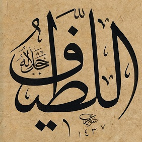

Tartışma konusu olan ru'yetullah meselesi: Allah'ı görmek mümkün mü? Şu âyet "Hayır, değil" diyor:
6:103
lâ tudrikuhul-ebsâr, vehuve yudrikul-ebsâr, vehuvel-latîful-ḣabîr
Hiçbir beşerî görüş O'nu kuşatamaz, halbuki O her türlü beşerî görüşü çevreleyip kuşatır: yalnız O'dur tam nüfûz edilemez olan, her şeyden haberdar bulunan.
Bir sonraki Surenin 7:143 len terâniy âyeti son noktayı koymuş: “Beni asla göremezsin!”
Latîf terimi, nitelik olarak son derece ince olan ve bu nedenle de fark edilemez ve nüfûz edilemez bulunan şeyleri gösterir. Bu terimin, Kuran'da Allah ile ilgili olarak ve habîr sıfatı ile birlikte geçtiği her yerde Allah'ın, kendisinin her şeyden haberdar oluşuna karşılık insanın tasavvuru, tahayyülü ve idrakinin erişemediği bir konumda bulunduğu düşüncesini ifade etmek için kullanıldığı görülmektedir.
Kaynak: Muhammed Esed Meali 6:103

Diğer isim el-Habîr ise, "Amellerin ne durumda olduğunu bilen ve haber veren" anlamına gelir. Yani işlerin içyüzünü de bilendir ve Ödeşme Gününde bunları tek tek bildirecektir.
35:14
... velâ yunebbiuke miślu ḣabîr
... sana bir habîr gibi haber veren olamaz
67:14
elâ ya'lemu men ḣalak, vehuvel-latîful-ḣabîr
Yaratan bilmez mi! O derin bilgi sahibidir, haberdardır.